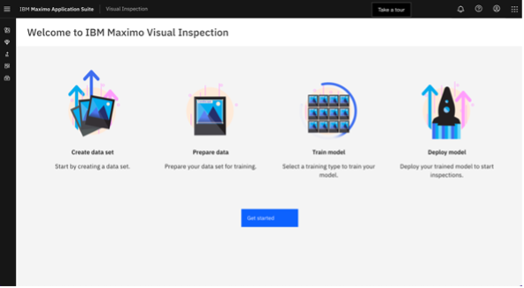
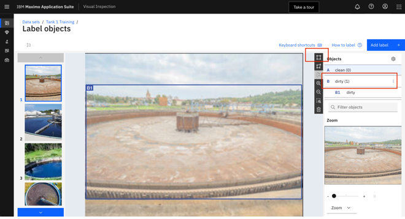
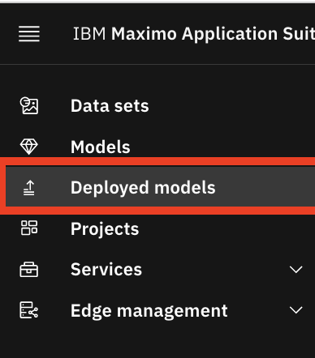

Visual Inspection
Visual Inspection Models (Asset Analyst)
Note
Follow this process to demonstrate how the MVI models were created and used in the Monitor section above.
The sedimentation tanks need to be constantly monitored for growth of fungi or other unwanted debris. The operator uses Maximo Visual Inspection to inspect the tanks. The cameras will be posted around the tanks for 24 hours a day, saving the operator time from checking the tanks every hour.
Demo: I am an Asset Analyst at the facility and have been tasked to develop models that can identify dirty tanks. The developed models need to be highly accurate as they will be integrated into our Asset management solution using IBM Maximo.
Create Dataset
The Asset Analyst must create a dataset to aggregate images of the tank and label the data that represents dirty and clean tanks. First, we need to teach the model what it’s looking for by uploading an image dataset and label or categorize the images in the dataset. The sample images can be found in the Box folder, but the dataset has already been loaded.
- Access Maximo Visual Inspection with the following URL
- Click on
Get Startedyou should see the datasets page. In this demo, we will show you how to create a model to automatically inspect sedimentation tank cleanliness. We have pre-uploaded a dataset with images.  - Type
tankin the search bar to filter for this dataset. - Click on the
Tank 1 TrainingIMAGE to open the dataset. - Select
Select Filesthen `Allv to select all images. - Click
LabelthenObjects. This is the training dataset to teach the model to recognizecleanvs.dirtytanks. There may be multiple tanks in an image so we will create an object detection model where we can label multiple objects in an image. Images have already been labeled. - Select a
clean tankimage from the images presented on the left. - Select
clean, select thedraw boxicon, anddraw a boxaround portion of the image that denotes aclean tank. This will annotate images with portions that denotes aclean tank. - Choose an image to see how to see label an object in the image. The labels
cleananddirtyhave already been created as seen on the right side. If there was another label needed, you would clickadd label. - Repeat labelling all the images with
dirtyandcleantanks  - Select
dirty, orcleanas needed, selectBox and drawto draw a box around portion of the image that denotes the correct tank. - Return to
Tank 1 Trainingusing the breadcrumbs. - Select all the images and click
Augment Data. You have now labeled 15 images (14 clean and 7 dirty). To train deep learning models of high accuracy, a dataset should have a variety and volume of images. MVI offers an ability to augment initial images by applying several filters.
- Select filters to
Sharpen,Crop,Rotate,Vertical&Horizontalflips to generate 255 additional images. - You can click
canceland navigate to theaugmented datasetthat is already created.
Image augmentation prevents overfitting your model to the few images uploaded and can increase accuracy of the model. This feature lowers the cost of data acquisition and labelling for Asset Analysts. Please note, the annotations are also inherited on the augmented images.
- Navigate to the new dataset called
Tank 1 Augmented – DO NOT DELETEand using the filter on objects, identify the 270 images, 252 labeled images with clean tanks and 126 images with dirty tanks. Your dataset may appear in a different order.
Train Models
We are ready to train a model.
1. Click the button labelled Train Model.
2. Select Object detection, make sure Faster R-CNN is selected. Normally you would click train model - a model is already created so show the model called DO NOT DELETE: OBJECT DETECTION MODEL FOR TANKS
Note
WARNING: If you click the button to Train model, it will take 30 minutes to complete the training.
MVI offers several types of models required to address a use case. There is image classification to classify the whole image, object detection models to identify an object or objects within an image, and action detection models to detect an action. For this use case, there may be multiple tanks in the frame of reference so we have will train an object detection model. For the demo, show the pretrained model ALREADY in the demo system.
- Select
Modelsfrom the left nav bar. - Use the search bar to find the
DO NOT DELETE: OBJECT DETECTION MODEL FOR TANKSmodel
As an Asset Analyst, I can view the characteristics of the trained model. Click the trained model to view model metrics like Accuracy, mAP, Precision, Recall, IoU, Loss graphs and Confusion matrix. Validate the deployed model.
- Click the model from the deployment page. 
- Select “Deployed models” from the left nav bar.
- Use the search bar to find the “DO NOT DELETE: OBJECT DETECTION MODEL FOR TANKS” model
- Access the validation images on the box folder
- Download an image from the
cleanfolder. - Drag and drop the image to validate. With validated model, you can build a dashboard in Maximo Monitor that will display the results of the tank inspections, from live camera feeds, as demonstrated in the Monitor section above.
Deploy the models
Now, I’m going to turn it over to the Asset Manager who can deploy the models to run the automated visual inspections on MVI Edge. As the Asset Inspector at the facility and have been tasked to monitor the facility for dirty tanks. I have deployed the models from the MVI training server onto MVI Edge. MVI Edge is connected to multiple cameras inspecting tanks across the facility. From the MVI Edge dashboard, I can keep track of the real-time inspections and send a service request if needed.
Setup Rules
- Access
Maximo Visual Inspection Edgeusing URL using the log in information from your email. You will find the dashboard of all your inspections running on thisMVI Edge. - Click on
Tank 1 - Click on
Configuration - The project made in the MVI training server is deployed in
MVI Edgewith the dataset and model.
Note
Before giving the demo, check that there are images in the inspection results. If there are not then:
1. Disable inspection with the `Enabled` toggle.
2. Scroll down to `edit input source`.
3. Click the refresh icon next to `Processed`.
4. Then go back and toggle to Enable inspection with “Disabled” toggle.
- Scroll down to the
Rulessection. - Click on the icon under
Settings.
Setup Alerts
The asset inspector can create rules based off the inference results. In this case, if the inference result is a clean tank with a confidence score of greater than a .8 threshold then the asset inspector can mark the inference inspection as a pass. The other rule set the inspection as a fail when the model finds a dirty tank.
- Scroll down to view the
Alert type. We can see that the asset inspector can send alerts via MQTT with theMaximo Monitor settingsor via Twilio. We see here that the MQTT sent the inspection results to Maximo Monitor which we saw previously. - Click
Cancelto exit the pop-up. We can select ourinput source, connecting animage folder,video, orcamera. In our case, we are connected to animage folder. - Scroll back to the top and click on the “Images” tab to see the inspection results from the input source.
- Click on an image.
Review Results
We see here all the inference results from this input source. There is a green check mark for a pass and a red X for a failed dirty tank inspection. There may also be a yellow question mark if the model is unsure about the result. We also see the exclamation point in the triangle to indicate that the particular inspection result has been sent to Maximo Monitor via MQTT.
- Navigate back to
Maximo Visual Inspectioncore using the URL. - Select
Projectsfrom the left nav. - Click on the Sedimentation tank project called
World Wide Demo – DO NOT DELETE
Summary
You have seen how easy it is to create AI models visual inspection using MVI projects to include the training datasets, inspection results datasets and models. MAS Visual Inspection for Business Users includes tools and interfaces for anyone with limited skills in deep learning technologies. This proven integrated technology solution scales real-time defect detection, allows alert capabilities from inspections, and optimizes manufacturing workflows, setting it apart from other products in the industry.